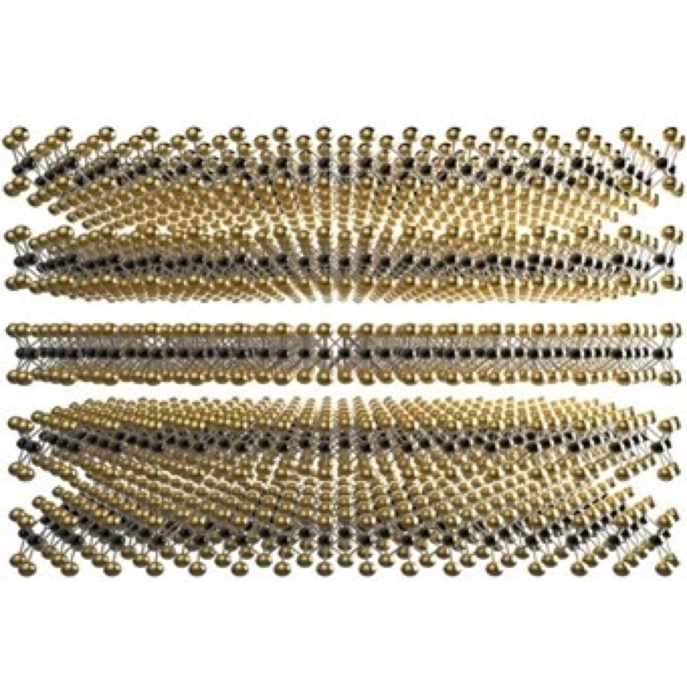
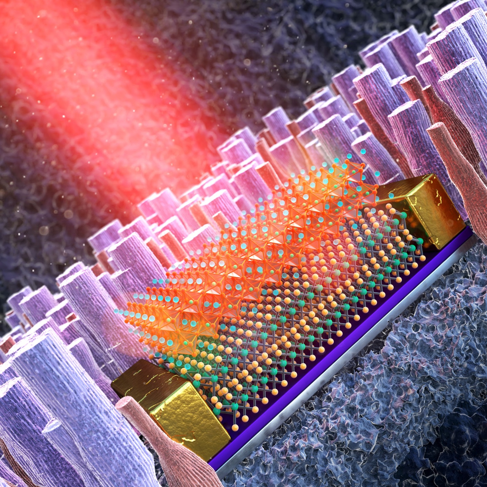
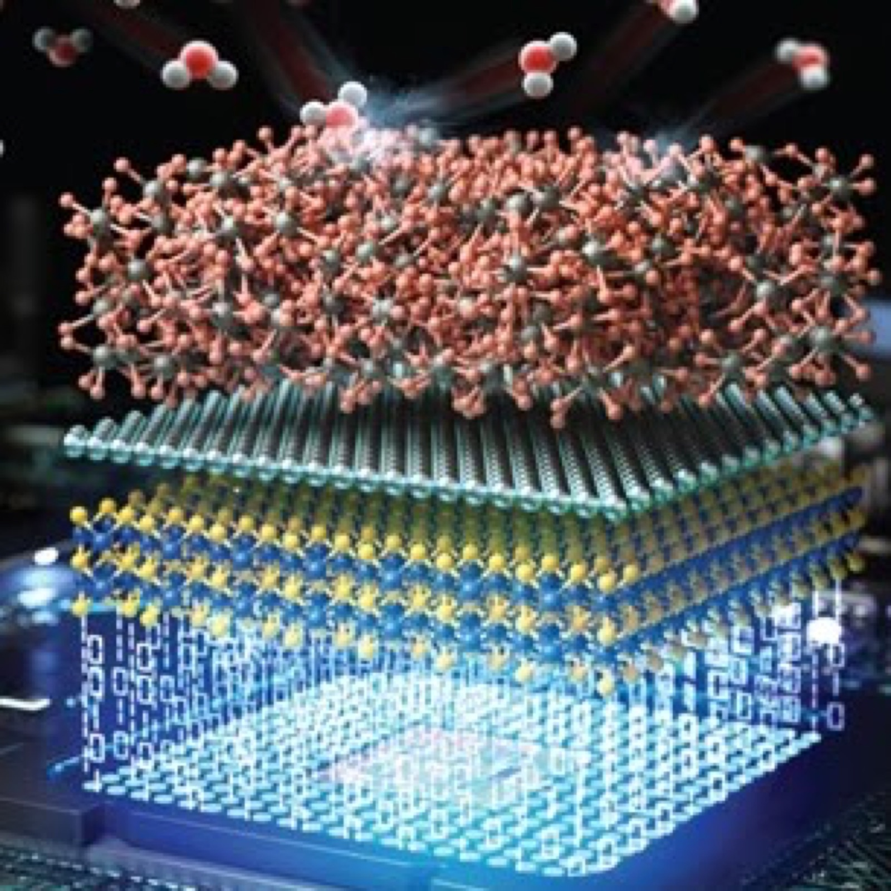

ONE 1aboratory
ONE 1aboratory는 overwhelming nano electronics laboratory의 약칭입니다.
우리는 세 가지 방향을 지향합니다. 최고를 향하고(No. one), 독창성을 추구하며(only one), 모두에게 기여하는(for everyone) 연구입니다.
주요 연구 분야는 차세대 반도체, 뉴로모픽 공학, 광전자공학, 센서 시스템, 웨어러블·유연 전자공학입니다.





